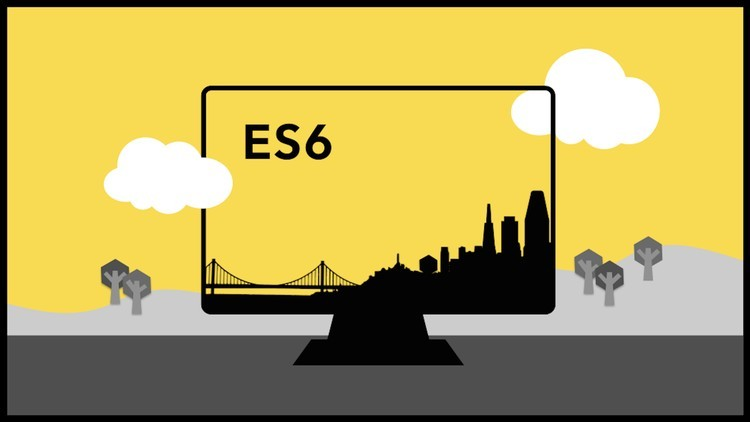

JavaScript merupakan bahasa pemrograman yang sedang tren pada tahun belakangan ini. Berbagai teknologi muncul menggunakan bahasa pemrograman JavaScript, mulai dari website, mobile, IOT, desktop.
Salah satu yang menarik perhatian adalah pada sisi website, di mana teknologi-teknolog baru muncul menggunakan bahasa pemrograman JavaScript. Pada sisi Frontend muncul Framework JavaScript seperti ReactJs, VueJs, dan Angular. Pada sisi Backend, muncul teknologi NodeJs dan Frameworknya yaitu ExpressJs.
Semuanya menggunakan bahasa pemrograman JavaScript, wow.
Namun, sebelum mempelajari berbagai Framework yang ada terutama pada sisi web baik Frontend atau Backend, terdapat konsep JavaScript dasar dan konsep JavaScript modern yang harus diketahui, dipelajari, dan dipraktikkan.
Pada tulisan kali ini, kita hanya fokus membahas beberapa konsep JavaScript modern. Tulisan ini akan terus berlanjut dan disempurnakan sesuai dengan perkembangan JavaScript.
Terakhir, singkatnya semakin baik kita memahami JavaScript (Native/Pure/Vanilla) maka semakin baik kita memahami Framework JavaScript.
Mari kita bahas konsep JavaScript modern yang ada.
Keyword let dan const memberikan hasil yang lebih baik dan dapat diprediksi dibandingkan variabel yang dideklarasi dengan var.
let dan const memperbaiki permasalahan yang terdapat pada keyword var seperti hoisting.
let dan const bersifat block scope
Keyword let digunakan untuk variabel yang bisa di-reassign setelah dideklarasi.
Keyword const digunakan untuk variabel yang tidak bisa di-reassign.
xxxxxxxxxxlet greeting = "";const newUser = true;if (newUser) { // variabel let bisa di-reassign greeting = "Nice to meet you";}else { greeting = 'Welcome back';}// variabel const tidak bisa di-reassignnewUser = false; // hasilnya akan errorconsole.log(greeting);Template literals sangat powerfull dibandingkan string biasa yang menggunakan kutip satu atau kutip dua.
Interpolasi atau memasukkan nilai ke dalam string menjadi lebih mudah menggunakan sintaks ${}.
Tidak perlu menggunakan operator + untuk menggabungkan string.
Lebih mudah menulis multiline
Bisa menggunakan tanda kutip bersarang (dengan kutip satu atau kutip dua) di dalam template literals.
Menulis string menggunakan kutip dua.
xxxxxxxxxx/* menulis string menggunakan kutip dua. menggabungkan string menggunakan operator +*/const name = "Aufa Billah";const greeting = "Hai" + name + ", Selamat Datang.";console.log(greeting);Menulis string menggunakan template literals.
xxxxxxxxxx/* menulis string menggunakan template literals memasukkan variabel dengan sintaks ${}*/const name = "Aufa Billah";const greeting = `Hai ${name}, Selamat Datang`;console.log(greeting);Arrow function memungkinkan kita untuk menulis function dengan sintaks yang lebih singkat
=>Arrow function hadir dengan 3 shorthand, penulisan function lebih pendek:
Penulisan fungsi normal.
xxxxxxxxxx// normal functionfunction capitalize(word) { return word.toUpperCase();}capitalize("Selamat Datang");Penulisan arrow function.
xxxxxxxxxx// arrow functionconst capitalize = (word) => { return word.toUpperCase();}capitalize("Selamat Datang");Penulisan arrow function dengan shorthand.
xxxxxxxxxx// arrow function dengan shorthandconst capitalize = word => word.toUpperCase();capitalize("Selamat Datang");Dibandingkan menggunakan for untuk me-looping array, methods array seperti map, filter, reduce memungkinkan kita untuk me-looping array dengan tujuan tertentu:
Method array lebih singkat dan lebih deklaratif dari pada for.
Melakukan perulangan dengan for.
xxxxxxxxxx/* menyimpan name dari array users ke array usernames menggunakan for*/const users = [ { name: "Bob", id: 1 }, { name: "Jane", id: 2 }, { name: "Fred", id: 3 },];const usernames = [];for (let i = 0; i < users.length; i++) { usernames[i] = users[i].name;}console.log(usernames);Melakukan perulangan dengan method array map.
xxxxxxxxxx/* menyimpan name dari array users ke array usernames menggunakan method array map*/const users = [ { name: "Bob", id: 1 }, { name: "Jane", id: 2 }, { name: "Fred", id: 3 },];const usernames = users.map(user => user.name);console.log(usernames);Destructing memungkinkan kita untuk mengubah (mengekstrak) pasangan key-value object menjadi variabel.
Destructing juga bisa dilakukan pada array sama seperti object.
Mengakses properti object tanpa destructing.
xxxxxxxxxxconst user = { name: "Reed", username: "ReedBarger", email: "reed@gmail.com", details: { title: "Programmer" }}// mengakses object property tanpa destructingconsole.log(`${user.name}, ${user.email}`);Melakukan destructing pada object, lalu mengakses variabel hasil destructing.
xxxxxxxxxxconst user = { name: "Reed", username: "ReedBarger", email: "reed@gmail.com", details: { title: "Programmer" }}// destructing objectconst {name, email} = user;console.log(`${name}, ${email}`);Tanpa menggunakan default parameters.
xxxxxxxxxx// tanpa parameters defaultfunction sayHi(name) { return `Hai ${name}`;}sayHi();sayHi("Billah");Menggunakan default parameters.
xxxxxxxxxx// menggunakan parameter defaultfunction sayHi(name = "Aufa") { return `Hai ${name}`;}sayHi();sayHi("Billah");Arrow function dengan default parameters.
xxxxxxxxxx// Arrow function dengan parameter defaultconst sayHi = (name = "Aufa") => `Hi ${name}`;sayHi();sayHi("Billah");Spread operator digunakan untuk menyebarkan object (pasangan key-value) ke object yang baru.
Spread operator bagus untuk membuat object baru dengan menggabungkan property mereka secara bersamaan.
Spread operator dapat digunakan pada object dan array.
xxxxxxxxxxconst user = { name: "", email: "", phoneNumber: "",};const newUser = { name: "ReedBarger", email: "reed@gmail.com"};/* menggabungkan object user yang kosong dengan object newUser. object yang tersebar terakhir akan menimpa object sebelumnya jika propertinya memiliki nama yang sama.*/const mergedUser = {user, newUser};console.log(mergedUser);${} pada template literals).Percabangan menggunakan if-else.
xxxxxxxxxxlet age = 26;let greeting;// statement if-elseif (age > 18) { greeting = 'Hello, fellow adult';}else { greeting = 'Hey kiddo';}console.log(greeting);Percabangan menggunakan ternary operator.
let age = 26;let greeting;// ternary operatorsgreeting = age > 18 ? "Hello, fellow adult" : "Hey kiddo";console.log(greeting);